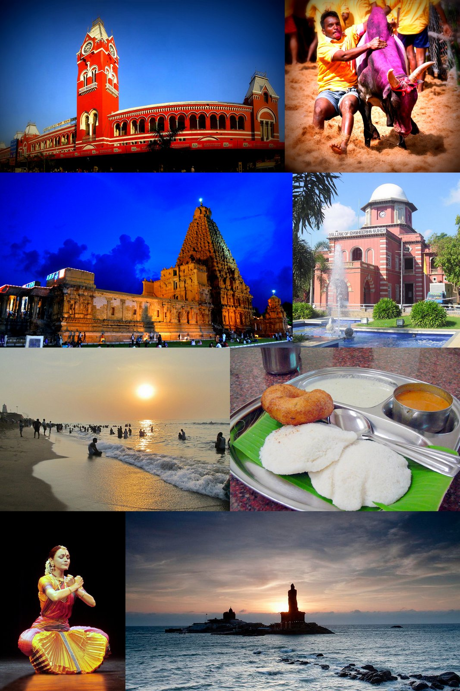
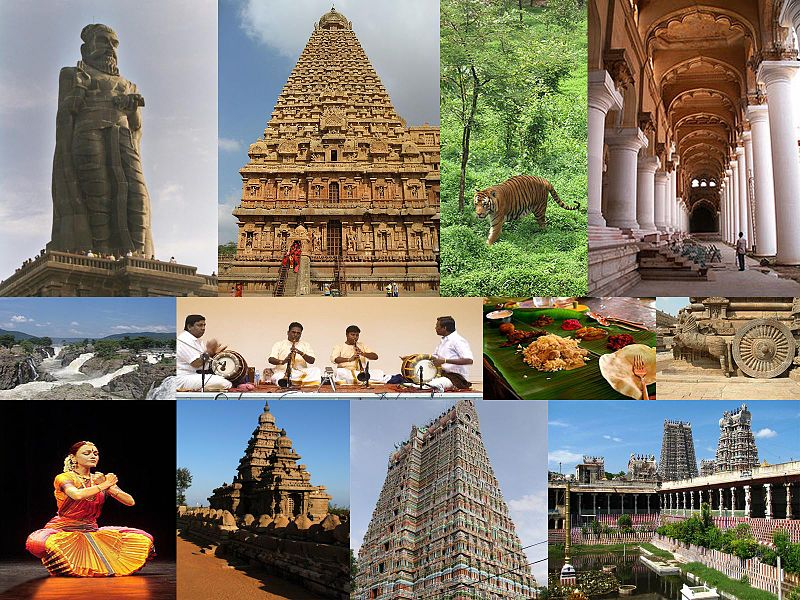

Tamilnadu is one of the 28 states of India. Its capital and largest city is Chennai (formerly known as Madras). Tamil Nadu lies in the southernmost part of the Indian subcontinent and is bordered by the union territory of Puducherry and the South Indian states of Kerala, Karnataka, and Andhra Pradesh. It is bounded by the Eastern Ghats on the north, by the Nilgiri Mountains, the Meghamalai Hills, and Kerala on the west, by the Bay of Bengal in the east, by the Gulf of Mannar and the Palk Strait on the southeast, and by the Indian Ocean on the south. The state shares a maritime border with the nation of Sri Lanka. The region was ruled by several empires, including the three great empires – Chera, Chola and Pandyan empires, which shape the region's cuisine, culture, and architecture. The British Colonial rule during the modern period led to the emergence of Chennai, then known as Madras, as a world-class city. Modern-day Tamil Nadu was formed in 1956 after the reorganisation of states on linguistic lines. The state is home to a number of historic buildings, multi-religious pilgrimage sites, hill stations and three World Heritage sites.
Tamil Nadu has a wide range of biomes extending east from the South Western Ghats montane rain forests in the Western Ghats through the South Deccan Plateau dry deciduous forests and Deccan thorn scrub forests to tropical dry broadleaf forests and then to the beaches, estuaries, salt marshes, mangroves, seagrasses and coral reefs of the Bay of Bengal. The state has a range of flora and fauna with many species and habitats. To protect this diversity of wildlife there are Protected areas of Tamil Nadu as well as biospheres which protect larger areas of natural habitat often include one or more national parks. The Gulf of Mannar Biosphere Reserve established in 1986 is a marine ecosystem with seaweed seagrass communities, coral reefs, salt marshes and mangrove forests. The Nilgiri Biosphere Reserve located in the Western Ghats and Nilgiri Hills comprises part of adjoining states of Kerala and Karnataka. The Agasthyamala Biosphere Reserve is in the south west of the state bordering Kerala in the Western Ghats. Tamil Nadu is home to five declared national parks located in Anamalai, Mudumalai, Mukurithi, Gulf of Mannar, Guindy located in the centre of Chennai city and Vandalur located in South Chennai. Sathyamangalam Tiger Reserve, Mukurthi National Park and Kalakkad Mundanthurai Tiger Reserve are the tiger reserves in the state.